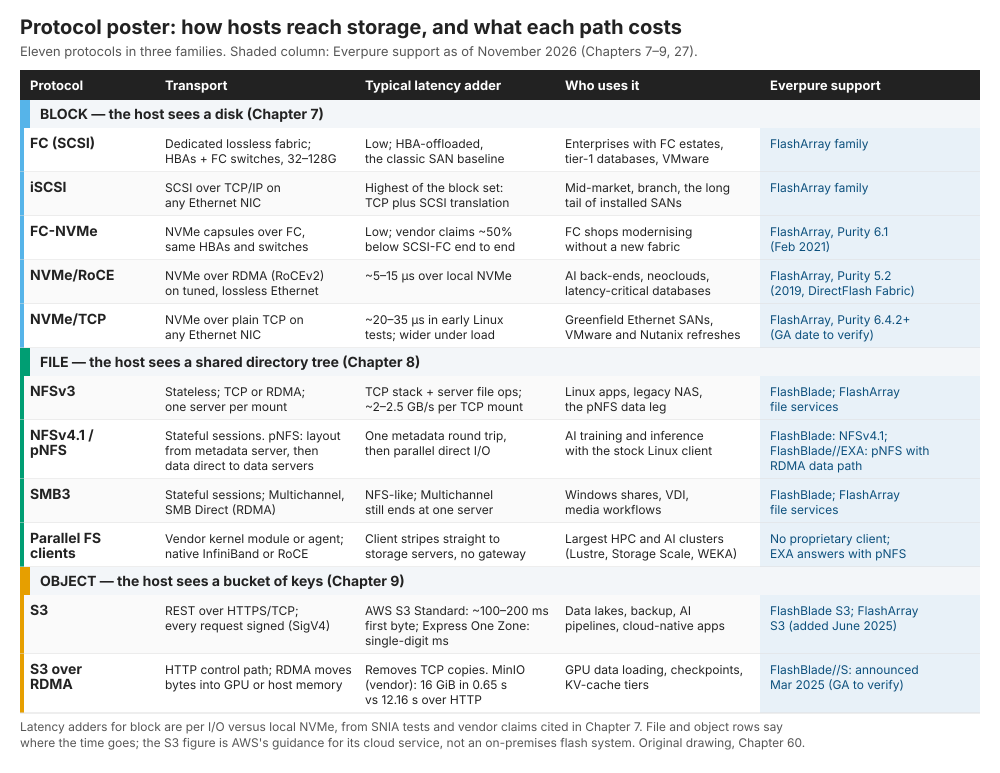
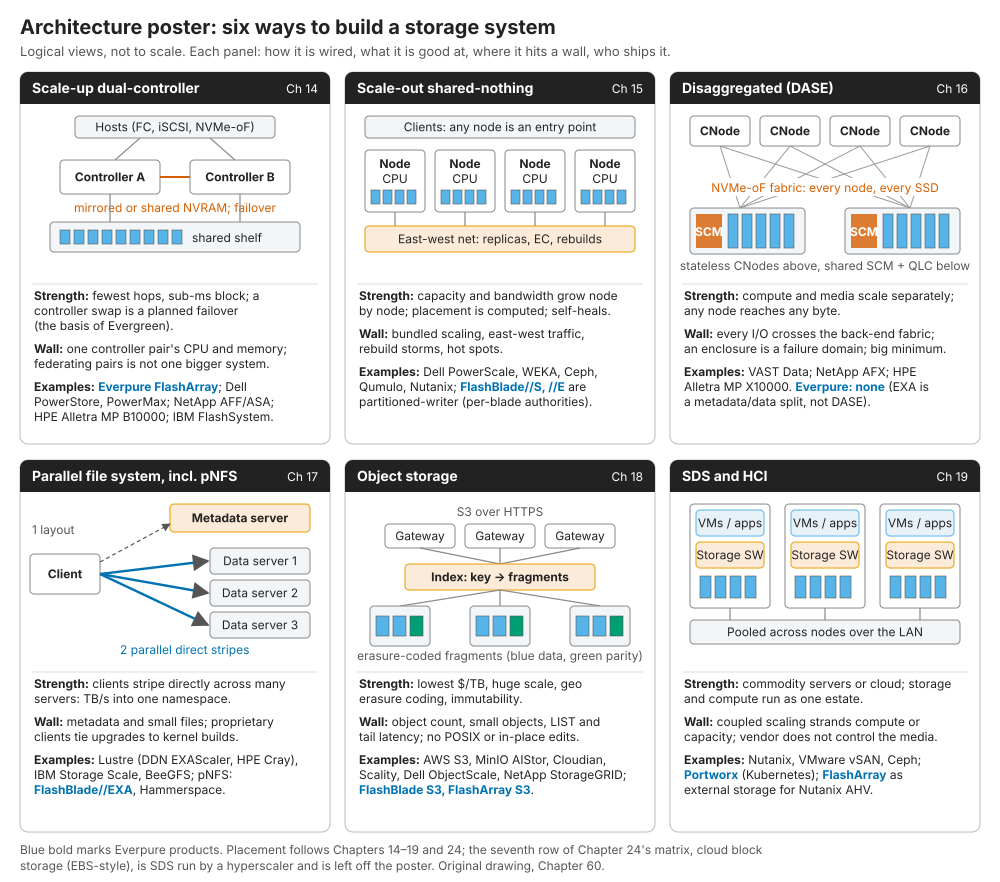
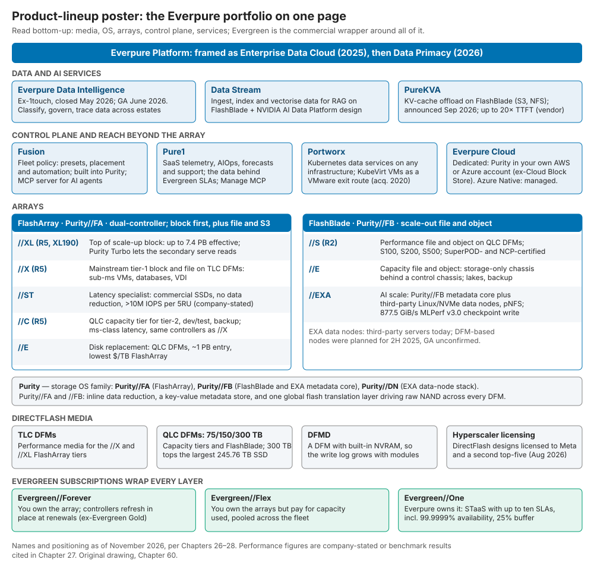

60. Cheat sheets¶
Depth: L1 · Reading time: ~5 min · Last verified: 2026-11-01 Prerequisites: Block protocols · File protocols · Object storage and S3 · Architecture decision matrix · FlashArray and FlashBlade · Platform and software · Glossary
TL;DR¶
- Four one-page references built from facts the atlas has already sourced: a 104-entry acronym sheet and three posters (protocols, architectures, Everpure products), each with an accessible table.
- Protocols sort by what the host sees: a disk, a directory tree or a bucket of keys. The transport sets the latency cost: about 5–15 µs for NVMe over RDMA and 20–35 µs for NVMe/TCP over local NVMe12.
- Six architectures cover almost every deal, and each has a wall: controller, east-west traffic, fabric, metadata, small objects or coupled scaling.
- Everpure sits on every architecture row except DASE. FlashBlade//S is partitioned scale-out; FlashBlade//EXA is a pNFS metadata/data split.
- The lineup is a stack: DirectFlash, Purity, two array families, Fusion and Pure1, Portworx and Everpure Cloud, Data Intelligence, all wrapped in Evergreen.
Why this matters for Everpure strategy¶
Meetings with PMs and the Office of the CTO run on shorthand. Calling FlashBlade//S "shared-everything" or confusing NVMe/TCP with NVMe/RoCE costs credibility in one sentence (Chapter 56). Names also moved fast: Cloud Block Store became Everpure Cloud Dedicated, and 1touch became Everpure Data Intelligence34. Every cell here traces to a sourced chapter. If a poster and a chapter disagree, trust the chapter.
Core concepts¶
How to use these sheets¶
Use them two minutes before a call. Footnotes cite original sources; linked chapters carry the reasoning.
Sheet 1: Acronyms, A–Z¶
Two traps: RPO means recovery point objective to an engineer but remaining performance obligations to the CFO, and the "KV" in KV cache is attention keys and values, not a key-value database.
| Acronym | Expansion | One-line meaning | Chapter |
|---|---|---|---|
| AFR | Annualized failure rate | Share of devices expected to fail per year | Ch 20 |
| AIOps | AI for IT operations | Machine learning on telemetry to predict faults and suggest fixes | Ch 22 |
| ALUA | Asymmetric Logical Unit Access | SCSI method by which an array tells hosts which paths are optimized | Ch 14 |
| ANA | Asymmetric Namespace Access | NVMe's counterpart of ALUA for multipathing | Ch 7 |
| ANN | Approximate nearest neighbour | Vector search that gives up a little recall for large speed-ups | Ch 33 |
| ARR | Annual recurring revenue | Annualised subscription run rate; Everpure reports subscription ARR | Ch 29 |
| CMX | Context memory storage | NVIDIA's BlueField-4-based Ethernet flash tier for KV cache | Ch 32 |
| COW | Copy-on-write | Snapshot method that copies old blocks aside before overwriting them | Ch 6 |
| CRUSH | Controlled Replication Under Scalable Hashing | Ceph's computed (not looked-up) data placement | Ch 15 |
| CSI | Container Storage Interface | Plug-in standard through which Kubernetes requests volumes | Ch 22 |
| CXL | Compute Express Link | Coherent memory and I/O protocols over the PCIe physical layer | Ch 12 |
| DAS | Direct-attached storage | Drives inside, or cabled to, one server | Ch 13 |
| DASE | Disaggregated shared-everything | Stateless compute nodes sharing all media over NVMe-oF | Ch 16 |
| DFM | DirectFlash Module | Everpure's raw-NAND module with no drive-level FTL | Ch 26 |
| DFMD | DirectFlash Module with NVRAM | DFM carrying its own NVRAM, so write-log capacity grows with modules | Ch 14 |
| DLIO | Deep Learning I/O (benchmark) | Emulator MLPerf Storage uses to mimic training data loading | Ch 37 |
| DPDK | Data Plane Development Kit | User-space library that drives NICs directly, bypassing the kernel | Ch 43 |
| DPU | Data processing unit | NIC with its own CPU cores and accelerators | Ch 10 |
| DRR | Data-reduction ratio | Logical data ÷ physical capacity after dedupe and compression | Ch 5 |
| DSPM | Data security posture management | Tools that find sensitive data and its exposure | Ch 39 |
| DWPD | Drive writes per day | SSD endurance rating: full-capacity writes per day over warranty | Ch 2 |
| EC | Erasure coding | k data + m parity strips; rebuild from any k | Ch 6 |
| ECN | Explicit Congestion Notification | Switches mark packets so senders slow down before drops | Ch 10 |
| EDSFF | Enterprise and Data Center Standard Form Factor | E1/E3 SSD shapes built for density and airflow | Ch 12 |
| FC | Fibre Channel | Dedicated, lossless enterprise SAN fabric | Ch 7 |
| FC-NVMe | NVMe over Fibre Channel | NVMe-oF on existing FC HBAs and switches | Ch 7 |
| FDP | Flexible Data Placement | NVMe hints that group data with similar lifetimes | Ch 12 |
| FTL | Flash translation layer | Maps logical blocks to NAND pages; hides erase-before-write | Ch 3 |
| GC | Garbage collection | Copies valid pages out of blocks so they can be erased | Ch 3 |
| GDS | GPUDirect Storage | DMA between storage or NIC and GPU memory, no CPU bounce | Ch 11 |
| GPFS | General Parallel File System | IBM's parallel file system, now IBM Storage Scale | Ch 17 |
| HAMR | Heat-assisted magnetic recording | Laser-heated HDD writing for higher areal density | Ch 2 |
| HBA | Host bus adapter | Server card that attaches to an FC or SAS storage network | Ch 7 |
| HBM | High-bandwidth memory | Stacked DRAM on the GPU package; top of the memory hierarchy | Ch 2 |
| HCI | Hyperconverged infrastructure | Each node runs VMs, storage software and local drives | Ch 19 |
| HDD | Hard disk drive | Spinning magnetic media; cheapest online $/TB | Ch 2 |
| HNSW | Hierarchical Navigable Small World | Graph-based vector index, fast in DRAM | Ch 33 |
| IOPS | I/O operations per second | Request rate; meaningless without I/O size and latency | Ch 4 |
| iSCSI | Internet SCSI | SCSI commands over TCP/IP on ordinary Ethernet | Ch 7 |
| KV cache | Key-value cache (attention) | Stored attention keys and values, so tokens aren't recomputed | Ch 32 |
| LBA | Logical block address | Number of one fixed-size block in a volume | Ch 1 |
| LDPC | Low-density parity-check (code) | Error-correcting code SSD controllers use on NAND | Ch 3 |
| LTO | Linear Tape-Open | Dominant open tape-cartridge standard | Ch 2 |
| LUN | Logical unit number | SCSI address of a block volume | Ch 7 |
| MCP | Model Context Protocol | Open protocol connecting AI agents to tools and data | Ch 22 |
| MDS | Metadata server | Parallel-FS server for namespace, layouts and locks | Ch 17 |
| MDT | Metadata target | Lustre volume holding directories, inodes and layouts | Ch 17 |
| MFU | Model FLOPs utilization | Share of peak GPU math a training job actually uses | Ch 31 |
| MLC | Multi-level cell | NAND storing 2 bits per cell | Ch 2 |
| MPIO | Multipath I/O | Host software spreading I/O across paths, with failover | Ch 14 |
| MTTDL | Mean time to data loss | Modelled time before overlapping failures lose data | Ch 20 |
| NAS | Network-attached storage | System that owns the file system and serves NFS/SMB | Ch 13 |
| NCCL | NVIDIA Collective Communications Library | GPU-to-GPU collectives such as all-reduce | Ch 11 |
| NCP | NVIDIA Cloud Partner | NVIDIA's GPU-cloud programme, with a storage certification tier | Ch 35 |
| NDR | Net dollar retention | This year's revenue from last year's cohort ÷ last year's | Ch 28 |
| NDU | Non-disruptive upgrade | Swap controllers, software or media with I/O running | Ch 14 |
| NFS | Network File System | Linux/Unix file-sharing protocol | Ch 8 |
| NIXL | NVIDIA Inference Xfer Library | Moves KV-cache blocks between GPU, host and storage | Ch 11 |
| NQN | NVMe Qualified Name | Unique name of an NVMe host or subsystem | Ch 7 |
| NVCS | NVIDIA-Certified Storage | NVIDIA's tiered storage certification (Foundation, Enterprise, NCP) | Ch 34 |
| NVMe | Non-Volatile Memory Express | Flash-native command set with up to 65,535 queues | Ch 7 |
| NVMe-oF | NVMe over Fabrics | NVMe across a network: FC, RDMA or TCP | Ch 7 |
| NVRAM | Non-volatile RAM | Persistent memory holding an array's write log | Ch 13 |
| OP | Over-provisioning | Hidden spare flash used for garbage collection | Ch 3 |
| OSD | Object storage daemon | Ceph process managing one drive | Ch 15 |
| OSS | Object storage server | Lustre server that serves file data | Ch 17 |
| OST | Object storage target | Lustre data volume behind an OSS | Ch 17 |
| PFC | Priority Flow Control | Pauses one Ethernet traffic class to avoid drops | Ch 10 |
| PG | Placement group | Ceph's unit of placement and rebalancing | Ch 15 |
| PLC | Penta-level cell | NAND storing 5 bits per cell | Ch 53 |
| PLP | Power-loss protection | Capacitors that let an SSD flush buffered writes on power loss | Ch 3 |
| pNFS | Parallel NFS | NFSv4.1+ layouts let clients hit data servers directly | Ch 8 |
| POSIX | Portable Operating System Interface | Unix file semantics apps expect: rename, locks, visibility | Ch 8 |
| PUE | Power usage effectiveness | Facility power ÷ IT power; 1.0 is ideal | Ch 4 |
| QLC | Quad-level cell | NAND storing 4 bits per cell; capacity media | Ch 2 |
| QoS | Quality of service | Per-workload performance limits or floors (e.g., Fusion presets) | Ch 28 |
| RAG | Retrieval-augmented generation | Retrieve private data, then feed it to the LLM as context | Ch 33 |
| RAID | Redundant array of inexpensive disks | Mirroring or parity across drives | Ch 6 |
| RDMA | Remote direct memory access | NIC moves data memory-to-memory with no kernel copies | Ch 10 |
| RoCE | RDMA over Converged Ethernet | RDMA on Ethernet; v2 is routable over UDP/IP | Ch 10 |
| RPO | Recovery point objective | Data loss tolerated, in time. To finance: remaining performance obligations (Ch 29) | Ch 6 |
| RTO | Recovery time objective | Downtime tolerated before service returns | Ch 6 |
| S3 | Simple Storage Service | Amazon's object API, the de facto standard | Ch 9 |
| SAN | Storage area network | Dedicated network for shared block storage | Ch 13 |
| SCM | Storage-class memory | Persistent media between DRAM and NAND (Optane, SLC SSDs) | Ch 12 |
| SCSI | Small Computer System Interface | 1986 command set still carried by FC and iSCSI | Ch 7 |
| SDS | Software-defined storage | Storage OS sold without the box | Ch 19 |
| SLA | Service-level agreement | Contracted guarantee, e.g., Evergreen//One availability | Ch 23 |
| SLC | Single-level cell | NAND storing 1 bit per cell: fastest, most durable | Ch 2 |
| SMB | Server Message Block | Windows file-sharing protocol; SMB3 adds Multichannel | Ch 8 |
| SMR | Shingled magnetic recording | Overlapped HDD tracks: more capacity, sequential writes | Ch 2 |
| SPDK | Storage Performance Development Kit | User-space, polled NVMe driver library | Ch 43 |
| SQ/CQ | Submission / completion queue | NVMe's paired command and completion rings | Ch 7 |
| SSD | Solid-state drive | NAND plus controller, FTL and DRAM in one device | Ch 3 |
| STaaS | Storage as a service | Vendor owns on-site storage; customer pays for use under SLAs | Ch 23 |
| TAM | Total addressable market | Spend a category could capture if it won every deal | Ch 40 |
| TCO | Total cost of ownership | Acquisition, power, space, support and operations over time | Ch 4 |
| TCV | Total contract value | A contract's value over its whole term | Ch 23 |
| TLC | Triple-level cell | NAND storing 3 bits per cell; performance media | Ch 2 |
| TTFT | Time to first token | Delay before an LLM's first output token | Ch 32 |
| UEC | Ultra Ethernet Consortium | Group behind a 2025 Ethernet transport for AI/HPC | Ch 10 |
| URE | Unrecoverable read error | Sector a drive cannot read back; the rebuild risk | Ch 6 |
| WAF | Write amplification factor | NAND writes ÷ host writes | Ch 3 |
| ZNS | Zoned Namespaces | NVMe zones written sequentially, reset by the host | Ch 12 |
Table 60.1 — 104 acronyms, each linked to the chapter that explains it.
Sheet 2: The protocol poster¶

Figure 60.1 — The family sets the semantics, the transport sets the latency; Everpure covers every row but a proprietary parallel client.
Three reading rules. First, the command set and the transport are separate layers: NVMe runs over PCIe, Fibre Channel, RDMA or TCP, and the latency cost comes mostly from the transport.
Second, file and object protocols add server-side work, so they are judged on parallelism more than microseconds. One NFS mount over TCP tops out at about 2–2.5 GB/s on 100 GbE, against roughly 8 GB/s with RDMA (vendor-measured)5. Feeding a 100 GB/s GPU server takes about 100 ÷ 2.25 ≈ 44 TCP flows, which is why nconnect, pNFS and parallel clients exist.
Third, coverage depends on the array family. FlashArray offers every block transport plus NFS, SMB and, since June 2025, S36. FlashBlade offers NFS, SMB and S3; FlashBlade//EXA gets parallel bandwidth through pNFS and the stock Linux client7.
| Family | Protocol | Transport | Typical latency adder | Who uses it | Everpure support |
|---|---|---|---|---|---|
| Block | FC (SCSI) | Lossless FC fabric, HBAs | Low; HBA-offloaded SAN baseline | FC estates, tier-1 databases | FlashArray family |
| Block | iSCSI | SCSI over TCP/IP | Highest of block: TCP plus SCSI translation | Mid-market, branch, installed SANs | FlashArray family |
| Block | FC-NVMe | NVMe on existing FC | Low; ~50% below SCSI-FC (vendor claim)8 | FC shops modernising in place | FlashArray, Purity 6.1, Feb 20218 |
| Block | NVMe/RoCE | NVMe over RDMA on Ethernet | ~5–15 µs over local NVMe1 | AI back-ends, neoclouds, latency-critical DBs | FlashArray, Purity 5.2, 20199 |
| Block | NVMe/TCP | NVMe over TCP, any NIC | ~20–35 µs early tests; wider under load2 | Greenfield Ethernet SANs, VMware/Nutanix | FlashArray, Purity 6.4.2+10 [VERIFY: GA date] |
| File | NFSv3 | Stateless; TCP or RDMA; one server per mount | TCP stack plus server file ops; ~2–2.5 GB/s per TCP mount5 | Linux apps, legacy NAS, pNFS data leg | FlashBlade; FlashArray file services |
| File | NFSv4.1 / pNFS | Stateful; layout from metadata server, data direct | One metadata round trip, then parallel direct I/O | AI at scale with the stock client | FlashBlade NFSv4.1; FlashBlade//EXA pNFS with RDMA data7 |
| File | SMB3 | Stateful; Multichannel, SMB Direct | NFS-like; still one server per share | Windows shares, VDI, media | FlashBlade; FlashArray file services |
| File | Parallel FS clients | Kernel module or agent; IB/RoCE | Client stripes straight to servers | Largest HPC and AI clusters | None; EXA uses pNFS instead |
| Object | S3 | HTTPS REST, signed requests | AWS S3 Standard ~100–200 ms first byte11; Express One Zone single-digit ms12 | Data lakes, backup, AI pipelines | FlashBlade S3; FlashArray S3 (2025)6 |
| Object | S3 over RDMA | HTTP control, RDMA data | 16 GiB load 0.65 s vs 12.16 s over HTTP (MinIO, vendor)13 | GPU loading, checkpoints, KV tiers | FlashBlade//S, announced March 202514 [VERIFY: GA date] |
Table 60.2 — Accessible version of Figure 60.1, with sources in the cells.
Sheet 3: The architecture poster¶

Figure 60.2 — Each architecture trades one wall for another; Everpure has a product on five of the six rows and deliberately none on DASE.
The poster follows Chapter 24's matrix minus cloud block storage, which is software-defined storage run by a hyperscaler. Two labels need care. Pure Storage calls Purity//FB "partitioned-writer": blades own namespace slices while Purity manages flash globally1516, closer to shared-nothing than to DASE. FlashBlade//EXA splits metadata from data, but clients fetch a layout and then go straight to data nodes. That is a parallel file system on a scale-out metadata engine, not DASE (Chapter 16).
Semiconductor bridge. Scale-up is one memory controller with a hot spare; shared-nothing is NUMA; DASE is UMA across a fabric; a parallel file system is a tag lookup followed by direct DMA.
| Architecture | Strength | Wall | Example products (Everpure in bold) |
|---|---|---|---|
| Scale-up dual-controller | Fewest hops, sub-ms block; controller swap is a planned failover | One controller pair's CPU and memory | FlashArray; Dell PowerStore, PowerMax; NetApp AFF/ASA; HPE Alletra MP B10000; IBM FlashSystem |
| Scale-out shared-nothing | Capacity and bandwidth grow per node; computed placement; self-healing | Bundled scaling, east-west traffic, rebuild storms | Dell PowerScale, WEKA, Ceph, Qumulo, Nutanix; FlashBlade//S, //E (partitioned-writer) |
| DASE | Compute and media scale separately; any node reaches any byte | Back-end fabric hop, enclosure failure domain, large minimum | VAST Data, NetApp AFX, HPE Alletra MP X10000; none at Everpure |
| Parallel file system (incl. pNFS) | Clients stripe directly: TB/s into one namespace | Metadata, small files, client lifecycle | Lustre (DDN EXAScaler, HPE Cray), IBM Storage Scale, BeeGFS; FlashBlade//EXA, Hammerspace |
| Object | Lowest $/TB, huge scale, geo erasure coding | Object count, small objects, LIST, no POSIX | AWS S3, MinIO, Cloudian, Scality, Dell ObjectScale, NetApp StorageGRID; FlashBlade and FlashArray S3 |
| SDS / HCI | Commodity servers or cloud; one estate | Coupled scaling strands compute or capacity | Nutanix, VMware vSAN, Ceph; Portworx; FlashArray behind Nutanix AHV |
Table 60.3 — Accessible version of Figure 60.2; details and sources in Chapters 14–19 and 24.
Sheet 4: The product-lineup poster¶

Figure 60.3 — One media strategy and one OS family under two array families; the software layers reach beyond Everpure hardware.
Read it bottom-up. DFMs reached 300 TB17, above the largest standard SSD confirmed shipping, 245.76 TB18. FlashArray models differ mainly in media and controller size; FlashBlade splits into performance (//S), capacity (//E) and AI scale (//EXA), whose data nodes are third-party servers19. The control plane and reach products sit above, topped by the data-intelligence layer from the US$125.0M 1touch deal4. Evergreen is the commercial wrapper; subscription ARR reached US$2.13B in Q2 FY2720.
| Layer | Product | One-line positioning |
|---|---|---|
| Media | DirectFlash Modules (TLC; QLC 75/150/300 TB; DFMD) | Raw NAND managed by Purity's global FTL; denser than standard SSDs17 |
| OS | Purity//FA, //FB; Purity//DN | One log-structured OS family for FlashArray and FlashBlade, including EXA's metadata core; Purity//DN is the software stack that manages EXA's third-party Linux data nodes19 |
| FlashArray | //XL (R5, XL190) | Top scale-up block, up to 7.4 PB effective at an assumed 5:1 reduction; Purity Turbo reads on the secondary2122 |
| FlashArray | //X (R5) | Mainstream tier-1 block and file on TLC DFMs |
| FlashArray | //ST | Latency specialist on commercial SSDs, no data reduction, >10M IOPS per 5RU (company-stated)23 |
| FlashArray | //C (R5) | QLC capacity tier on the //X controllers |
| FlashArray | //E | Disk replacement, about 1 PB entry24 |
| FlashBlade | //S (R2) | Performance file and object; S500 DGX SuperPOD-certified25; FlashBlade also NCP high-performance-storage certified (Ch 27) |
| FlashBlade | //E | Capacity file and object with storage-only chassis26 |
| FlashBlade | //EXA | Purity//FB metadata core plus third-party data nodes over pNFS; 877.5 GiB/s MLPerf v3.0 checkpoint write27 |
| Control plane | Fusion, Pure1 | Fleet policy and placement; telemetry and AIOps; both expose MCP servers |
| Reach | Portworx | Kubernetes and KubeVirt VM data services on any infrastructure28 |
| Reach | Everpure Cloud Dedicated / Azure Native | Purity in the customer's AWS or Azure account; fully managed Azure service2930 |
| Services | Everpure Data Intelligence, Data Stream, PureKVA | Classify and govern data (GA June 2026)3; AI ingest and vectorisation31; KV-cache offload32 |
| Commercial | Evergreen//Forever, //Flex, //One | Owned with in-place refresh; owned, pay per use; STaaS with SLAs including 99.9999% availability33 |
Table 60.4 — Accessible version of Figure 60.3, using the current names from Chapters 26–28.
How Everpure approaches it vs. competitors¶
| Poster | Everpure coverage | Where a rival is stronger |
|---|---|---|
| Protocols | All block transports; NFS, SMB, pNFS; S3 on both families | Proprietary clients (WEKA, Lustre) give finer client-side control; object specialists ship S3 over RDMA today |
| Architectures | Five of six rows, one OS family across the arrays | VAST, NetApp AFX and HPE X10000 own the DASE row; Dell PowerScale has the scale-out NAS base |
| Lineup | Own media, one OS, one control plane | Dell and HPE sell servers and networking on one purchase order; NetApp runs first-party in three hyperscalers |
Table 60.5 — Everpure trades portfolio breadth for one stack; its gaps sit at each poster's edges.
Steelman: breadth suits a one-stop AI-factory buyer; coherence suits a lean storage team. Options a strategy team might evaluate, based on public information, sit in the posters' empty or unverified cells: S3-over-RDMA proof points, DFM-based EXA data nodes, and Data Intelligence beyond Everpure arrays (Chapter 54).
History and trajectory¶
The posters are November 2026 snapshots. Three cells move fastest: GPU data paths (NVIDIA's RDMA-for-S3 server library reached 1.0 in January 202634); EXA hardware (DFM-based data nodes planned, GA unconfirmed; Chapter 27); and naming (Enterprise Data Cloud in 2025, Data Primacy in 20263). Re-verify them before reusing a poster.
Numbers that matter¶
| Metric | Value | Context | Source / date |
|---|---|---|---|
| NVMe/RoCE latency adder | ~5–15 µs | Per I/O vs local NVMe | SNIA, 20161 |
| NVMe/TCP latency adder | ~20–35 µs | Early Linux tests | SNIA, 20192 |
| S3 Standard first-byte latency | ~100–200 ms | AWS guidance, not a guarantee | AWS docs11 |
| Single NFS/TCP mount, 100 GbE | ~2–2.5 GB/s (~8 GB/s RDMA) | Vendor-measured | VAST KB5 |
| TCP flows to feed 100 GB/s | ~44 | 100 ÷ 2.25 | Worked example |
| Largest DFM vs largest SSD | 300 TB vs 245.76 TB | Media density lead | B&F 2026-0817; Micron 2026-0518 |
| FlashBlade//EXA checkpoint write | 877.5 GiB/s | MLPerf Storage v3.0, 30 data nodes | 2026-0927 |
| Subscription ARR | US$2.13B (+20%) | Q2 FY27 | Everpure, 2026-08-2620 |
| Acronyms on Sheet 1 | 104 | Table 60.1 count | Worked example |
Conversation playbook¶
Questions for a PM
- "Which block transport do new FlashArray deals land on, and how is the mix shifting?" Strong: a split by segment, NVMe/TCP tied to VMware and Nutanix refreshes, FC's persistence admitted.
- "Where on the lineup poster does a neocloud deal start, and what makes it expand?" Strong: EXA for training, PureKVA for inference, Evergreen//One for consumption, with gating items (NCP certification, data-node sourcing).
- "Which software layer wins budget without an array attached?" Strong: standalone Portworx or Data Intelligence numbers, or a candid "mostly attached".
Questions for an engineer
- "On EXA, what happens when a layout is recalled or the metadata core is slow?" Strong: LAYOUTGET over TCP, direct RDMA data, recall and fallback behaviour, metadata scaling by blade count.
- "Why no proprietary parallel client?" Strong: no kernel-module lifecycle versus less client-side control, stated as a trade-off.
- "What changes server-side for S3 over RDMA on FlashBlade?" Strong: GA status, cuObject compatibility, token handling, HTTP fallback.
Don't say this:
- "FlashBlade//S is shared-everything, like VAST." It is partitioned-writer.
- "EXA is Everpure's DASE." It is a metadata/data split with a direct pNFS path.
- "NVMe/TCP is too slow." It adds tens of microseconds.
- "Pure Cloud Block Store." It is Everpure Cloud Dedicated.
- "RPO" in a finance meeting without saying which one.
Going deeper (optional, L3 pointers)¶
- Chapter 24: the full workload matrix; Chapter 49: vendor matrices.
- Chapter 58 and Chapter 59: one-liners and self-tests; the glossary for full definitions.
Key terms¶
- Latency adder — extra time per I/O a transport or software layer adds.
- Partitioned-writer — Everpure's term for FlashBlade: blades own namespace slices; media is managed globally.
- Metadata/data split — clients get a layout from metadata servers, then move data directly.
- Single-mount ceiling — the throughput one client mount reaches before parallel paths are needed.
- Stock client — the protocol client built into the operating system.
Sources¶
-
R. Davis (Mellanox), "Demonstrating NVMe Performance over Ethernet," SNIA Data Storage Innovation Conference, 2016. https://www.snia.org/sites/default/files/DSI/2016/presentations/stor_networks/Rob_Davis_Demonstrating_NVMe_Performance_Ethernet.pdf (retrieved 2026-11-01). ↩↩↩
-
SNIA, "Author of NVMe/TCP Spec Answers Your Questions," 2019. https://snia.org/blog/2019/author-nvmetm-tcp-spec-answers-your-questions (retrieved 2026-11-01). ↩↩↩
-
HPCwire, "Everpure Wants to Improve Data Management for the Coming AI Wave," 2026-06-20. https://www.hpcwire.com/aiwire/2026/06/20/everpure-wants-to-improve-data-management-for-the-coming-ai-wave/ (retrieved 2026-11-01); Everpure Support, "White Paper: Everpure Cloud Dedicated for AWS," n.d. https://support.everpuredata.com/r/bHp_RInmbnRr219God~wDA/vvUbjhwU28Xj07IMH9rE6w (retrieved 2026-11-01). ↩↩↩
-
SEC, "Everpure, Inc. Form 10-Q for the quarter ended May 3, 2026," 2026-06. https://www.sec.gov/Archives/edgar/data/0001474432/000147443226000061/pstg-20260503.htm (retrieved 2026-11-01). ↩↩
-
VAST Data, "NFS Features for Enhanced Performance" (knowledge base), n.d. https://kb.vastdata.com/documentation/docs/nfs-features-for-enhanced-performance (retrieved 2026-11-01). ↩↩↩
-
Techzine, "Pure surprises: FlashArray gets S3 support, FlashArray//ST without DFMs," 2025-06. https://www.techzine.eu/blogs/infrastructure/132388/pure-surprises-flasharray-gets-s3-support-flasharray-st-without-dfms/ (retrieved 2026-11-01). ↩↩
-
Everpure, "Technical Brief: FlashBlade//EXA," n.d. (2025). https://www.everpuredata.com/content/dam/pdf/en/technical-briefs/tb-flashblade-exa.pdf (retrieved 2026-11-01); Blocks & Files, "How Pure Storage developed its disaggregated FlashBlade//EXA system," 2025-04-17. https://blocksandfiles.com/2025/04/17/how-pure-storage-developed-its-disaggregated-flashblade-exa-system/ (retrieved 2026-11-01). ↩↩
-
Blocks & Files, "Pure Storage ramps up enterprise creds with ransomware and DR support" (Purity 6.1, NVMe/FC), 2021-02-16. https://www.blocksandfiles.com/flash/2021/02/16/pure-storage-ramps-up-enterprise-creds-with-ransomware-and-dr-support/1591949 (retrieved 2026-11-01); C. Hosterman, "What's New in Purity 6.1: NVMe-oF/Fibre Channel," 2021-02. https://www.codyhosterman.com/2021/02/whats-new-in-purity-6-1-nvme-of-fibre-channel/ (retrieved 2026-11-01). ↩↩
-
Techzine, "Pure Storage introduces NVMe-oF RoCE with DirectFlash Fabric," 2019-02. https://www.techzine.eu/news/data-management/38963/pure-storage-introduces-nvme-of-roce-with-directflash-fabric/ (retrieved 2026-11-01). ↩
-
Pure Storage, "Purity//FA 6.4 Release Highlights," n.d. https://blog.purestorage.com/purity-fa-releases/current-active-release-purity-fa-6-4-0 (retrieved 2026-11-01); OpenStack Cinder, "[Pure Storage] Add TCP transport type to NVMe driver" (requires Purity 6.4.2+), n.d. https://gitea09.opendev.org:3081/openstack/cinder/commit/dc77207e4c73950f1cacee5c9022586821ea6b59 (retrieved 2026-11-01). ↩
-
AWS, "Best practices design patterns: optimizing Amazon S3 performance," Amazon S3 User Guide, n.d. https://docs.aws.amazon.com/AmazonS3/latest/userguide/optimizing-performance.html (retrieved via search 2026-11-01). ↩↩
-
AWS What's New, "Announcing the Amazon S3 Express One Zone storage class," 2023-11-28. https://aws.amazon.com/about-aws/whats-new/2023/11/amazon-s3-express-one-zone-storage-class (retrieved 2026-11-01). ↩
-
MinIO, "Introducing S3 over RDMA in AIStor: Object Storage at the Speed of Memory," n.d. https://www.min.io/blog/introducing-s3-over-rdma-in-aistor-object-storage-at-the-speed-of-memory (retrieved 2026-11-01). ↩
-
StorageNewsletter, "NVIDIA GTC 2025: Pure Storage Integrates NVIDIA AI Data Platform into FlashBlade," 2025-03-19. https://www.storagenewsletter.com/2025/03/19/nvidia-gtc-2025-pure-storage-integrates-nvidia-ai-data-platform-into-flashblade/ (retrieved 2026-11-01). ↩
-
J. Emerson (Pure Storage), "The Storage Architecture Spectrum: Why 'Shared-nothing' Means Nothing," n.d. https://blog.everpuredata.com/perspectives/the-storage-architecture-spectrum-why-shared-nothing-means-nothing/ (retrieved 2026-11-01; seen via search summary, host not fetchable). ↩
-
StorageNewsletter, "Pure Accelerate Techfest22: Pure Storage FlashBlade//S Platform," 2022-06-10. https://www.storagenewsletter.com/2022/06/10/pure-accelerate-techfest22-pure-storage-flashblade-s-platform/ (retrieved 2026-11-01). ↩
-
Blocks & Files, "Second hyperscaler plumps for Everpure's flash technology," 2026-08-11. https://www.blocksandfiles.com/flash/2026/08/11/second-hyperscaler-plumps-for-everpures-flash-technology/5285903 (retrieved 2026-11-01). ↩↩↩
-
Micron Technology, "Industry-Leading 245TB Micron 6600 ION Data Center SSD Now Shipping," 2026-05-05. https://investors.micron.com/news/press-release/2026/Industry-Leading-245TB-Micron-6600-ION-Data-Center-SSD-Now-Shipping/default.aspx (retrieved 2026-11-01). ↩↩
-
Everpure, "FlashBlade//EXA Terms of Use," n.d. https://www.everpuredata.com/legal/flashblade-exa-terms-of-use.html (retrieved 2026-11-01). ↩↩
-
Everpure, "Everpure Announces Second Quarter Fiscal 2027 Financial Results," 2026-08-26. https://investor.everpuredata.com/news-and-events/press-releases/press-release-details/2026/Everpure-Announces-Second-Quarter-Fiscal-2027-Financial-Results/default.aspx (retrieved 2026-11-01). ↩↩
-
Pure Storage, "FlashArray//XL datasheet," n.d. (R5 edition). https://www.purestorage.com/content/dam/pdf/en/datasheets/ds-flasharray-xl.pdf (retrieved 2026-11-01). ↩
-
Everpure, "Pure Launch Blog: January 2026 Edition," 2026-01. https://blog.everpuredata.com/products/pure-launch-blog-january-2026-edition/ (retrieved 2026-11-01). ↩
-
Pure Storage, "FlashArray//ST" product page and datasheet, 2025. https://www.purestorage.com/products/unified-block-file-storage/flasharray-st.html (retrieved 2026-11-01). ↩
-
Pure Storage, "Pure Storage Expands Pure//E Family, Enabling Customers to Choose Flash For Any Workload," 2023-06. https://investor.everpuredata.com/news-and-events/press-releases/press-release-details/2023/Pure-Storage-Expands-PureE-Family-Enabling-Customers-to-Choose-Flash-For-Any-Workload/default.aspx (retrieved 2026-11-01). ↩
-
Blocks & Files, "Pure Storage's FlashBlade//S500 gains Nvidia SuperPOD certification," 2024-11-18. https://www.blocksandfiles.com/ai-ml/2024/11/18/pure-storages-flashblade/s500-gains-nvidia-superpod-certification/1598641 (retrieved 2026-11-01). ↩
-
StorageNewsletter, "Pure Storage Ushers in New Era of Unstructured Storage with FlashBlade//E," 2023-03-02. https://www.storagenewsletter.com/2023/03/02/pure-storage-ushers-in-new-era-of-unstructured-storage-with-flashblade-e/ (retrieved 2026-11-01). ↩
-
HPCwire (Everpure release), "Everpure Leads MLPerf Storage Tests for Large Model Checkpointing and KV Cache," 2026-09-02. https://hpcwire.com/off-the-wire/everpure-leads-mlperf-storage-tests-for-large-model-checkpointing-and-kv-cache (retrieved 2026-11-01). ↩↩
-
IT Brief New Zealand, "Everpure adds VM storage tools for Kubernetes estates," 2026-03. https://itbrief.co.nz/story/everpure-adds-vm-storage-tools-for-kubernetes-estates (retrieved 2026-11-01). ↩
-
Pure Community, "Pure Cloud Block Store is now Pure Storage Cloud Dedicated," n.d. https://purecommunity.purestorage.com/tag/cloud (retrieved 2026-11-01). ↩
-
Blocks & Files, "Pure Enterprise Data Cloud updates," 2025-09-26. https://blocksandfiles.com/2025/09/26/pure-enterprise-data-cloud-updates/ (retrieved 2026-11-01). ↩
-
BigDATAwire / HPCwire, "Everpure Announces Data Stream to Expand AI-Ready Data Offerings," 2026-06-17. https://www.hpcwire.com/bigdatawire/this-just-in/everpure-announces-data-stream-to-expand-ai-ready-data-offerings/ (retrieved 2026-11-01). ↩
-
Blocks & Files, "Everpure bulks up AI offer," 2026-09-30. https://blocksandfiles.com/flash/2026/09/30/everpure-bulks-up-ai-offer/5300162 (retrieved 2026-11-01). ↩
-
Everpure, "Evergreen//One Advanced SLAs" (solution brief), n.d. https://www.everpuredata.com/content/dam/pdf/en/solution-briefs/sb-evergreen-one-advanced-slas.pdf (retrieved 2026-11-01). ↩
-
NVIDIA, "NVIDIA cuObject server v1.0.0 Release Notes," 2026-01-12. https://docs.nvidia.com/gpudirect-storage/cuobject/cuobject-server-release-notes/index.html (retrieved 2026-11-01). ↩